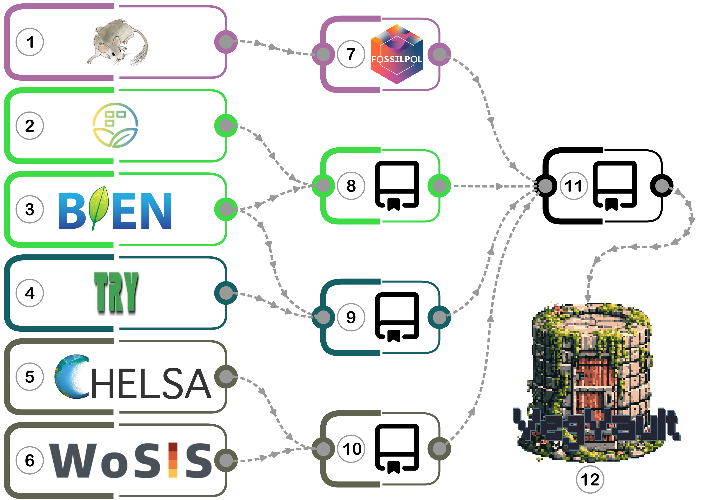

Database content
The VegVault database v1.0.0 is an SQLite database of a size of ~ 110 GB
Currently, the SQLite database consists of 29 interconnected tables with 87 fields (variables). See Databse Structure for more information.
| Datasets | > 480 000 |
| Samples | > 13 000 000 |
| Taxa | > 110 000 |
| Vegetation Traits | 6 |
| Trait values | > 11 000 000 |
| Abiotic variables | 8 |
See Database Access for more information on how to access the database.
!!! There should be spatio-temporal overview of the database content !!!
Assembly details of VegVault 1.0.0
The VegVault version 1.0.0 has been assembled from other publicly available databases.
Assembly process
Here is a general visualisation of the assembly process:
Figure legend:
- Neotoma Paleoecology Database - open, community-curated data and services for paleoecological and paleoenvironmental data
- source of fossil pollen data
- sPlotOpen - The open-access version of sPlot
- source of current vegetation plot data
- Botanical Information and Ecology Network - global patterns of plot inventories and surveys
- source of current vegetation plot and vegetation trait data
- TRY Plant Trait Database - open access plant trait data
- source of vegetation trait data
- Climatologies at High resolution for the Earth’s Land Surface Area - Long-term, transient modern- and paleo-climate data
- source of abiotic data
- World Soil Information Service - harmonised soil profile database
- source of abiotic data
- VegVault-FOSSILPOL GitHub repo
- a Tag (v1.0.0) to obtain and process fossil pollen data
- VegVault-Vegetation_data GitHub repo
- a Tag (v1.0.0) to process current vegetation plot data
- VegVault-Trait_data GitHub repo
- a Tag (v1.1.0) to process vegetation trait data
- VegVault-abiotic_data GitHub repo
- a Tag (v1.1.0) to process abiotic data
- VegVault GitHub repo
- a Tag (v1.0.0) to transfer the data into the SQLite database. S
- ee details below.
- VegVault - SQLite database (v1.0.0)
VegVault GitHub repo
In addition to the consolidation of all processed data into a unified SQLite database, the final VegVault “migration” repository performs three additional procedures: (i) taxa classification, (ii) grouping of traits into Trait Domains, and (iii) creation of gridpoints for abiotic data.
(i) Taxa classification
As VegVault consist of data on taxa from various sources, the {taxospace} R package is used to classify the diverse taxa into a unifying backbone in the VegVault database. The {taxospace} tool automatically aligns taxa names with the taxonomical backbone of the GBIF. Specifically, we find the best match of the raw names of taxa using Global Names Resolver that is then aligned with GBIF. Taxonomic information, detailed up to the family level, is stored for each taxon, ensuring consistency and facilitating comparative analyses across different datasets.(ii) Grouping of Traits into Trait Domains
As there are differences in trait names across sources of data (e.g., “Leaf nitrogen (N) content per leaf dry mass” and “leaf nitrogen content per leaf dry mass”), we added a new variableTrait Domainthat groups traits together following the trait selection of Diaz et al. (2016). For example, trait “Plant height vegetative” from TRY and trait “whole plant height” from BIEN are both grouped under “Plant height”Trait Domain.(iii) Creation of gridpoints of abiotic data
The abiotic data in the VegVault database provide essential information on environmental factors affecting vegetation distribution and traits, namely climate and soil variables. We developed a data structure that provides readily available environmental context for each vegetation (and trait) record by creating spatio-temporal links between these records and abiotic information. We first unified the resolution of the original rasters by resampling all abiotic data into ~ 25km resolution at 500-year time slices, reducing the amount of data. Next, as the rasters are not suitable to be stored in an SQLite database, we created artificial points, calledgridpoints, located in the middle of each raster cell. This resulted in a uniform spatio-temporal matrix ofgridpointsholding the abiotic information. Next, we linkedgridpointsand other non-gridpointSamples, namely vegetation_plot, fossil_pollen_archive, and traits (see database structure), and calculated the spatial and temporal distances between them. We discarded any gridpointSamplebeyond 50 km and/or 5000 years to any other non-gridpointSample. In VegVault, users can select the information for each non-gridpointSamplefrom the closest spatio-temporal abiotic data or get the average from all surroundinggridpoints. By providing such comprehensive and well-linked structure between vegetation and abiotic data, VegVault enhances the ability to study the interactions between vegetation and their environment, facilitating the workflow to advanced ecological research and modelling efforts.